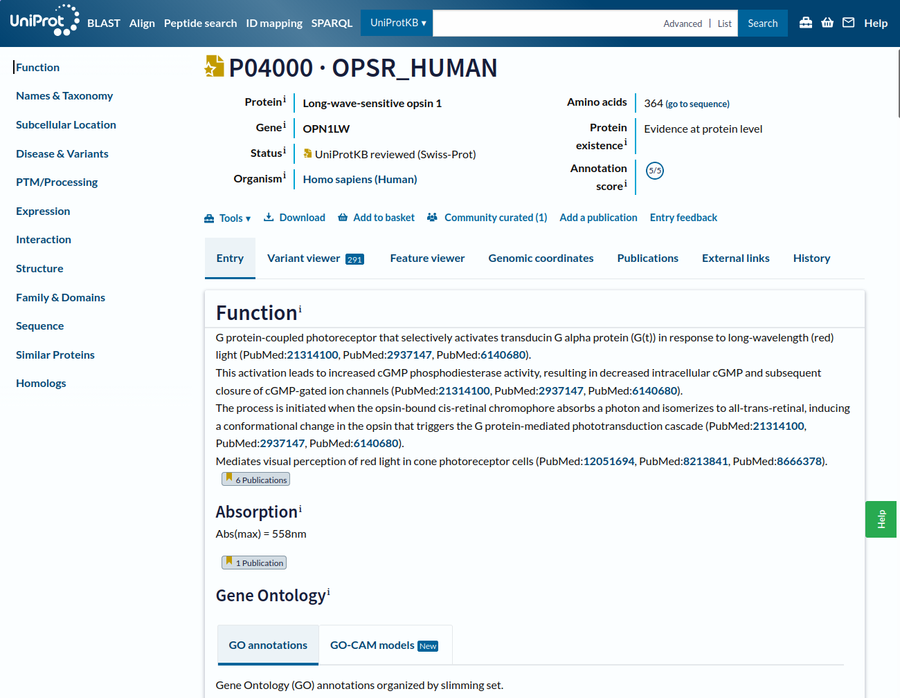

One protein along the UniProt page
Exploring a UniProtKB entry using human opsins as an example
A hands-on walk through a single UniProtKB entry (P04000, OPSR_HUMAN). You will learn how to search the database, read every section of an entry page, use the Variant and Feature viewers, follow cross-references to other resources, and inspect the annotation history of an entry.
Overview
- How can you search for proteins by free text, gene name, or protein name?
- How do you read the information at the top of a UniProt entry page?
- How is the function of a protein such as an opsin described?
- What structured information lives in the Names and Taxonomy, Subcellular location, Disease & Variants, and PTM/Processing sections?
- How do you find expression, interaction, structure, family, sequence, and similarity data?
- What do the Variant viewer and Feature viewer tabs add?
- What does the Publications tab list, and how can it be filtered?
- Why does the annotation history of an entry matter?
By the end of this session you should be able to:
- Interpret a UniProtKB entry: function, taxonomy, localisation, structure, interactions, and variants.
- Use stable unique identifiers to move between databases.
- Visualise and compare sequence features along a protein.
| Time estimate | ~1.5 hours |
| Level | Introductory |
| Prerequisites | Basic familiarity with genes, proteins, and molecular genomics features |
| Software needed | A web browser only |
Numbers reported in the solutions below (counts of search hits, publications, variants, and so on) were correct when the lesson was written. UniProt is updated roughly every eight weeks, so your numbers may differ. That is a feature, not a bug.
Ask yourself: Why does a knowledge base change?
1 Why is UniProt relevant for pharmaceutical sciences?
Almost every drug works by acting on a protein, and UniProt is the central, trusted reference where you can find what that protein is, what it does, where it’s found, how it varies between people and species, and which other resources (structures, drugs, pathways) are linked to it.
Whatever direction your pharmaceutical career takes, you’ll regularly need a reliable answer to “what is this protein and why does it matter for this drug?”, and UniProt is where that answer lives.
2 About this lesson
This lesson uses human opsins as a worked example. Opsins sit in the cells of the retina, where they capture light and start the signalling cascade that produces vision. When they are disrupted, the result can be colour blindness or other visual impairment.
Almost all of the work happens on the UniProt website.
The original Galaxy Training Network lesson drew on the UniProt help page Explore UniProtKB entry, and chose the topic following Gale Rhodes’ Bioinformatics Tutorial. The latter can no longer be followed step by step (the resources have changed too much) but is still a good source of background on opsins and on building structural models from evolutionary information.
3 Finding the right entry
The starting point for protein annotation is UniProtKB. You can query it with free text, a gene name, or a protein name. Let us begin with something deliberately vague.
Free text is too “vague”. A better strategy is to search on a unique identifier. The gene we are interested in called OPN1LW.
That first hit, P04000 (OPSR_HUMAN), is our target. Three things are worth noticing before opening it:
- The protein name (
OPSR_HUMAN) and the gene name (OPN1LW) are different, and so are their identifiers. Gene and protein are distinct entities with distinct names. - The entry carries a gold star, meaning it has been manually annotated and curated by a human (Swiss-Prot) rather than generated automatically (via TrEMBL).
- The annotation score is
5/5, meaning that its annotation is detailed and rich.
4 Reading the entry page

The page is long, so the left-hand navigation bar does a lot of work. It stays fixed as you scroll, and just reading it tells you what the database holds about this entry:
- known functions
- taxonomy
- subcellular location
- variants and associated diseases
- post-translational modifications (PTMs)
- expression
- interactions
- structure
- domains and their classification
- sequences
- similar proteins
- homologs
At the very top of the page you get the “ID card” of the protein:
- accession number and entry name
- the protein and gene names
- whether the entry has been reviewed by a curator (Status)
- the organism
- protein length (number of amino acids)
- the evidence level for the protein’s existence
- and the annotation score (how well is the database entry annotated)
Below the header there are 7 tabs: Entry, Variant viewer, Feature viewer, Genomic coordinates, Publications, External links, and History.
Notice that just above the tabs is a toolbar: From the Tools you can BLAST the sequence, add the entry to a basket for later analysis, or Download it.
For now, we will continue on the Entry tab.
4.1 Function
The Function section opens with a short free-text summary: visual pigments are the light-absorbing molecules behind vision, and consist of an apoprotein (opsin) covalently bound to cis-retinal.
Two sentences to summarize decades of research. That compression is possible because someone has already done the curation work, and because the protein has been classified in the Gene Ontology (GO), which describes molecular function, biological process, and cellular component.
GO is a good example of a resource that flattens a very complex body of knowledge into a graph. Detail is lost, but in exchange the information becomes countable, comparable, and machine-readable, which is exactly what makes summary pages like this one possible.
4.2 Names and taxonomy
The next section holds more structured information, including the taxonomic placement of the protein. It also lists other identifiers that point at the same biological entity, or at linked entities (for example associated diseases under MIM).
4.3 Subcellular location
We already know where the protein is in the body (the retina). But, where is it in the cell?
This section also has a Features area showing which portions of the sequence sit inside the membrane (transmembrane) and which do not (topological domain).
4.4 Disease and variants
This gene and protein are linked to several diseases. The section describes those associations and lists the specific variants implicated in each.
A Features area maps the natural variants along the sequence, and points you to the more detailed view in the Variant viewer app. Do not click on it yet! Resist the temptation for now.
4.5 PTM and processing
A post-translational modification (PTM) is a covalent event after translation: either a proteolytic cleavage, or the addition of a chemical group to an amino acid (e.g. glycosylation adds sugar, lipidation adds fats).
4.6 Expression
For human proteins there is often tissue-level expression information, drawn from resources such as the Expression Atlas.
4.7 Interaction
Proteins do their work by interacting with their surroundings, and above all with other proteins. This section lists known interactors in a table you can filter by subcellular location, disease, and interaction type. Much of the underlying data comes from databases such as STRING, which is linked directly.
4.8 Structure
The Structure section is the way into the three-dimensional world. It reports experimentally determined structures where they exist, and gives you an interactive viewer embedded in the page, so you can rotate the molecule and explore domains, binding sites, and other functional regions without leaving UniProt.
4.9 Family and domains
Going back to the Entry tab, the Family and Domains section places the protein in its evolutionary context: the families, superfamilies, and domains it belongs to, plus conserved regions, motifs, and other notable sequence features.
The Features area confirms that at least one of the two protruding domains (the N-terminal one) is disordered, and reiterates that we are dealing with a transmembrane protein.
The links out to phylogenetic and domain databases are the route into questions of common ancestry and functional specialisation.
4.10 Sequence
Everything above is ultimately encoded in the amino acid sequence. Here you can download the FASTA file, trace the data back to the sequencing experiments that produced it, and see any protein isoforms that have been detected.
4.11 Similar proteins and Homologs
The final two sections of the Entry tab lists similar proteins produced by clustering at 100%, 90%, and 50% identity thresholds, and the Homologs section provides orthology and paralogy information which has been retrieved from the Alliance of Genome Resources (AGR).
Recall
Orthology describes genes from different species that have evolved from a common ancestral gene through a speciation event, meaning these genes typically perform similar functions across species.
Paralogy, refers to genes within the same species that originated from duplication events, often resulting in genes with related but distinct functions.
A pattern should be emerging: much of what we do with protein data is mapping different layers of information onto the same sequence and asking how they relate. The next two tabs do exactly that, visually.
5 Variant viewer
This view maps every known alternative version of the sequence. Some have a known effect (pathogenic or benign); many do not.
The sheer number of variants is a useful corrective. A “protein sequence” (like a gene sequence, or a structure) is much less of a fixed object than the singular canonical entry suggests.
6 Feature viewer
The Feature viewer merges all the Features areas scattered through the Entry page into one track-based display: domains and sites, molecule processing, PTMs, topology, proteomics, and variants. Clicking a feature highlights the corresponding region in the structure.
7 Publications
This tab lists papers relevant to the protein, combining a manually curated list (from UniProtKB/Swiss-Prot) with automatically imported references.
On the left side you can filter by source, by the category of data a paper contributes (function, interaction, sequence, and so on), and by study size (small scale versus large scale).
8 External links
This tab gathers every cross-reference scattered across the Entry into one place. The link text usually shows the identifier that represents the same entity in the other database, which is what makes automated cross-referencing possible at all.
For a sense of how tangled that web is, look at the bioDBnet network diagram. Databases are the major nodes, identifiers the minor ones, and the region around the UniProt entry name, Gene ID, and Ensembl Gene ID is extremely dense. The diagram is already partly out of date, which rather makes the point.
9 History
The History tab exposes every previous version of the entry’s annotation, in this case going back to 1988, and lets you download them. It is a record of how knowledge about this protein has accumulated and been revised.
Key points
References
Original lesson:
Paladin, L. and Batut, B. One protein along the UniProt page (Galaxy Training Materials). https://gxy.io/GTN:T00360. Licensed CC BY 4.0.
Primary resource:
The UniProt Consortium. UniProt: the Universal Protein Knowledgebase. https://www.uniprot.org/